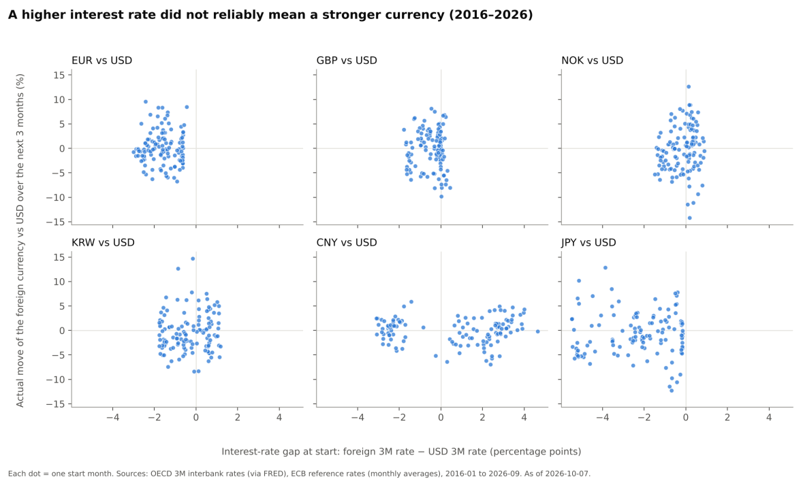

From the classroom to actual numbers.
I made this project while studying EXC3670 Financial Markets and Institutions at BI Norwegian Business School. I wanted to put the formulas into practice: convert exchange-rate quotes, work out the cost of dollar borrowing, and see how interest rates and inflation compare with currency movements.
The report is dated 7 October 2026. It combines worked examples with a historical comparison starting in 2016. The workbook holds the source data, country profiles and data-quality notes.

01 / Industries
Start with who pays in which currency.
The setting is cross-border borrowing and trade. An exporter receives money from overseas buyers; an importer pays foreign suppliers; a borrower has to repay a loan in the currency agreed with the lender. Converting those payments into the home currency can change the outcome even when the sales price or interest rate stays fixed.
I cover the US, South Korea, Norway, the UK, France, Germany and China. France and Germany share the euro. Japan appears as an extra historical comparison, and Brazil in a textbook example. This is a country-level exercise, not a company or dealer ranking. Toyota and Citibank appear only in the report’s textbook examples.
My question is simple: when does a higher interest rate help, and how much can the exchange rate change the result? Understanding the payment first helps me choose the right quote direction. It is also relevant to my 13-week cash-flow project, where the amount and timing of payments matter.
02 / Finance
Choose a formula that answers the question.
I work through direct and indirect quotes, foreign-currency borrowing costs, net exposure, the Fisher effect, purchasing power parity, the Big Mac index, exporter pricing, the International Fisher Effect and covered interest parity. A separate textbook example shows covered interest arbitrage.
For each calculation I need a currency convention, matching dates and a clear assumption. A borrowing-cost calculation uses the interest cost and the change in the repayment currency. PPP compares inflation and exchange-rate changes. A parity-implied forward uses interest rates and spot FX under simplifying assumptions; it is not an observed market forward or a reliable spot forecast.
I first collect the inputs, write the formula and its assumptions, calculate the result, then compare it with the relevant observation. This keeps a theory-based estimate separate from something that actually happened.
03 / Data
Check dates, units and missing observations.
The supplied workbook has 19 sheets. Its source catalog records providers, series, units, frequencies, observation dates and retrieval dates. It includes exchange rates, interest rates, inflation, trade, reserves and country profiles. The data-quality log explains missing values and differences between sources.
The report uses ECB reference rates from 6 October 2026 for its opening quote examples. The workbook also retains FRED and Norges Bank series with their own observation dates. I should not treat different fixing times or release dates as identical observations. The ECB describes its reference rates as informational rather than transaction prices.
For this portfolio page, the opening ECB inputs were matched to the workbook’s last FX_Daily row, and the Norwegian borrowing and exporter examples were independently recalculated from the report’s displayed inputs. This is a focused arithmetic check, not a new verification of every source or a full workbook recalculation.
The historical scatter plots are useful for seeing the spread of outcomes. The monthly test records and calculation sheet behind the report’s pooled return statistics are not included as a separate analysis output in the supplied workbook. Those statistics remain report-stated results, rather than independently reproduced findings.
04 / Automation
Make the next comparison easier to repeat.
This upload contains a report and a data workbook. It does not demonstrate a scheduled refresh or a live trading system. My next step would be to save each monthly test observation, its starting rate gap, its three-month outcome and the exact formula used.
A future refresh could collect new observations, flag missing data and update the comparisons. I would still check quote direction, dates and revisions before accepting the output. My n8n error-analysis workflow is a related example of recording a failure for review; it is not connected to this workbook.
For the historical comparison, I would also check overlapping three-month windows, transaction and financing costs, and an out-of-sample period. A result from this sample should not become a claim about future returns.
05 / What I learnt from it
Small changes in FX can change the answer.
| Example | Comparison | What I learnt |
|---|---|---|
| Norwegian dollar borrowing | 3.66% dollar rate → −2.24% effective NOK cost; −5.90 percentage points | Using the report’s September 2025–September 2026 rates, the currency move more than offsets interest in this hypothetical unhedged example. It is not an actual company loan result. |
| Norwegian exporter | NOK per USD: 9.9471 → 9.3808. Home-currency revenue: −5.69%. Required dollar price increase: +6.04%. | At a fixed dollar selling price and unchanged volume, preserving NOK revenue requires a different percentage from the exchange-rate fall. |
| Norwegian PPP comparison | Report: about +0.1% implied versus +8.2% observed; about 8.1 percentage points apart, August 2025–August 2026. | The one-year gap shows why I should not use an inflation difference as a precise short-term forecast. This comparison is reported in the PDF. |
The first two examples were checked using the displayed report inputs. These are learning examples and historical calculations. No improvement in trading performance, forecast accuracy or time savings has been measured.
What the report does not establish.
The PDF reports a 57% success frequency, a +0.46% average three-month gain and a −14.8% worst three-month outcome for its pooled comparison. These figures have not been independently reproduced here. A win frequency does not establish that the theory holds on average, and an expected-return relationship does not by itself require a 50% win rate.
Government yields are proxies, not executable bank borrowing or forward rates. Real funding conditions, market restrictions and transaction costs matter. BIS research on covered interest parity also explains why funding and balance-sheet constraints can leave a gap between the textbook relationship and market prices.
The trade-exposure exercise is a simplified goods-trade illustration. It does not establish a country’s total currency exposure or the overall benefit of a stronger dollar. The original report is retained unchanged below; these reading notes qualify its broader conclusions.
Read the work.
Read the project summary (PDF) ↗
A six-page explanation of the course formulas, country examples and historical comparison.
Download the data workbook (XLSX) ↗
The original 19-sheet workbook with source catalog, raw series, country profiles and data-quality notes. Both files are the supplied versions, with data as of 7 October 2026.